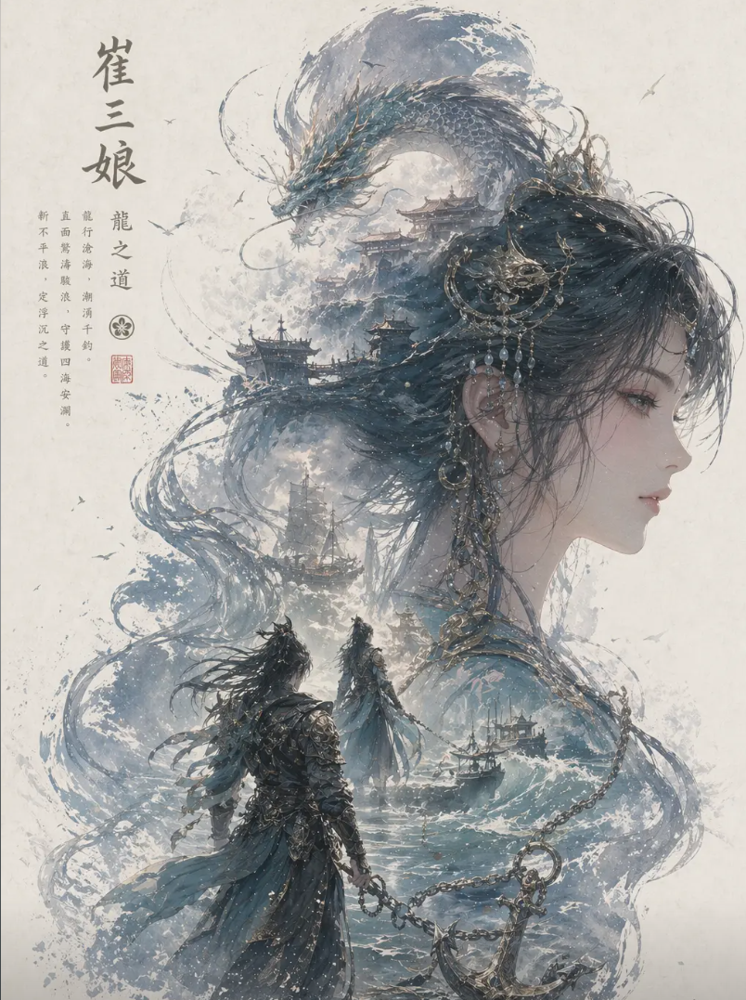

年龄：31 岁
出生地：无极帝国皇城
身份：薄雾海海盗首领
喜好：贝类、螃蟹、大海、航船、胭脂
讨厌：酒、懦弱之人、无极帝国水师
CV：周帅（端游）、蒋静菊（手游）
核心技能（奥义：深渊梦魇）：
基础效果：召唤洋流冲击前方扇形范围，击退周围敌人，被击中者将被【水龙卷】束缚 15 秒（无视霸体）。
进阶效果：成功束缚敌人后跃至半空，以玄水真气凝成龙灵守护，可按左键掷出水矛攻击。
附加效果：洋流与水矛均可附加【水浸】（10 秒内攻击力降低 5%，并直接结算【灼烧】剩余伤害，最多 400 点）。
脱离机制：束缚中的敌人遭受攻击即脱离，并免疫水龙卷 1 秒。
变体奥义（深渊梦魇・击）：击退敌人并以玄水真气护身（单排 18 秒，双 / 三排 25 秒），期间可多次发射水矛，按 F 键可掷出束缚水矛（低空束缚敌人 2 秒）。
崔三娘是为心中大义而战、称雄四海的奇女子，凭借智勇双全的特质和强大的控水能力，在游戏中展现出独特的战斗风格。
